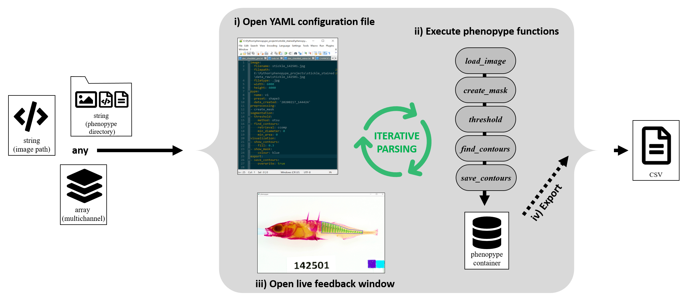

Example 1: Measuring shape, size and colour of isopods¶
In this example I am demonstrating all three phenopype workflows (prototyping, low thoughput and high throughput). For a project, you would probably only use either the high or low throughput approach, but the protoypting approach for this example decomposes the all the required steps for a classic computer vision workflow.
If you haven’t done so yet, have a look at Tutorial 2 where the different workflows and their features are explained.
Little nugget of information: this was the original computer vision problem that phenopype was intended to solve (it’s predecessor “iso_cv” was not much more than a script-collection).

Input - Freshwater isopod, alive, photographed on a white resin-tray from a camera stand.

Results - Isopod shape, size and colour are extracted (and size referenced using the reference card)
Prototyping¶
Loading the image¶
First we import the image from the a filepath using load_image. With the flag df=True we can extract some image-meta information that we want to be represented in the results files later (i.e. image name and its dimensions). After loading it, we can have a quick look at it with the show_image function - you can close it again with Enter or Esc.
[1]:
import phenopype as pp
[2]:
filepath = r"images/isopods.jpg"
image, img_data = pp.load_image(filepath, df=True)
pp.show_image(image)
[3]:
img_data ## size ratio refers whether this image has been resized using the resize argument of `load_image`
[3]:
| filename | width | height | size_ratio_original | |
|---|---|---|---|---|
| 0 | isopods.jpg | 2100 | 1400 | 1 |
Drawing a mask¶
The original image has a lot of noise, e.g. the non-white area around the tray, water reflections, the label, the reference card, and the little fecal pellets that lie around on the tray. Classic computer vision algorithms are unspecific to the object, so they will pick up any object that is darker than its environment. Therefore, a useful preprocessing step is to exclude some of that noise by applying a mask. With the create_mask function, you can include or exclude certain areas of the
image from the following analysis steps (include=True/False).
Here, we want to include all of the wite tray that has isopods in it: Hold the left button down and drag the rectangle shaped mask tool over the area you want to include (for more details on the mask and other interaction-tools, see Tutorial 5).
[4]:
masks = pp.preprocessing.create_mask(image,df_image_data=img_data)
- create mask
Create size reference¶
Within the area we masked lies the reference card. We want to include its information in our results files (the pixel-to-mm-ratio), so we supply the image meta DataFrame with df_image_data=img_data. However, we do not want the card itself to be detected, so we mask it with the argument mask=True and by supplying or mask DataFrame with df_masks=masks to have both masks in one place.

[5]:
img_data, masks = pp.preprocessing.create_scale(image,
mask=True,
df_image_data=img_data,
df_masks=masks)
- measure pixel-to-mm-ratio
Scale set
- add column length
Template selected
Now the masks DataFrame contains two masks: the one we created above that includes the tray and the one we made to exclude the scale reference card:
[6]:
masks
[6]:
| filename | width | height | size_ratio_original | mask | include | coords | |
|---|---|---|---|---|---|---|---|
| 0 | isopods.jpg | 2100 | 1400 | 1 | mask1 | True | [(515, 1067), (515, 1067), (515, 1067), (515, ... |
| 1 | isopods.jpg | 2100 | 1400 | 1 | mask1 | True | [(247, 187), (1894, 187), (1894, 1339), (247, ... |
| 0 | isopods.jpg | 2100 | 1400 | 1 | scale | False | [(441, 1017), (682, 1017), (682, 1229), (441, ... |
We can now have a quick look at both masks together by calling the visualization function draw_mask, followed by show_image. For this we should create a new array and not overwrite the original image loaded before - here we call it canvas:
[7]:
canvas = pp.visualization.draw_masks(image, df_masks=masks, line_width=3)
pp.show_image(canvas)
- show mask: mask1.
- show mask: mask1.
- show mask: scale.
Segmentation - 1st attempt¶
Now that we have removed most of the noise, we can implement an algorithm that segments the imgae into foreground and background (check the resources section of the documentation. Here we use the threshold algorithm that to detect the isopods as foreground and the tray as background. By supplying the mask DataFrame we created before with df_masks=masks, we can exclude the unwanted regions of the image:
[8]:
image_bin = pp.segmentation.threshold(image, df_masks=masks)
- applying mask: mask1
- applying mask: mask1
- applying mask: scale
The resulting array image_bin is a binary image where white regions are foreground and black background:
[9]:
pp.show_image(image_bin)
So far so good, but there is still a lot of noise inside the image (isopod fecal pellets) that we need to remove. Right now, all information about foreground and background is in “pixel-space”, i.e. it’s a drawn representation of the informative areas. To convert it to coordinate space, and in the later steps extract information from the raw image, we will use find_contours on this binary image. But setting the argument min_area, we can set a minimum size for the area that the contours
should have - 100 pixels should be enough to exclude all fecal pellets. Again, we can supply the image meta DataFrame to concatenate existing information. Afterwards we can draw the contours onto canvas with draw_contours - the detected contours are in green.
[10]:
df_contours = pp.segmentation.find_contours(image_bin, df=img_data, min_area=100)
canvas = pp.visualization.draw_contours(canvas, df_contours=df_contours)
pp.show_image(canvas)
Segmentation - 2nd attempt¶
Now we have excluded all noise - but some isopods are not well deteced. Mostly the ones with lighter pigmenation, because the contrast they form agains the light background isn’t strong enough. We can try a different threshold algorithm by setting the method argument: "adaptive" algorithms work particularly well with variable contrast levels and lighting.
Additionally, instead of using the default gray channel (i.e. the average across all three colour channels), we can try to run the thresholding function on a single colour channel. The contrast and signal-to-noise-ratio can be different betweeen the channels. We can select a different channel using the select_canvas function - here I isolate all three colour channels, and supply them to show_image to show themm all at once, and to evaluate, which colour-channels is suited best:
[11]:
r = pp.visualization.select_canvas(image, canvas="r")
g = pp.visualization.select_canvas(image, canvas="g")
b = pp.visualization.select_canvas(image, canvas="b")
pp.show_image([r,g,b], max_dim=500) ## max_dim=reduce window size to 500 pixels on any axis
- red channel
- green channel
- blue channel
Looking at this suggests that the green colour channel will yield the best results: here, even the lighter pigmented isopods have a strong contrast against the tray. We can supply either g to threshold, or directly select this with the channel argument:
[12]:
image_bin = pp.segmentation.threshold(image, method="adaptive", df_masks=masks, channel="green")
pp.show_image(image_bin)
- applying mask: mask1
- applying mask: mask1
- applying mask: scale
Segmentation - 3rd attempt¶
Obviously we need to to tune a few things here, waay to many things are being detected. Currently the "adaptive" algorithm is on default sensitivity (blocksize=99), which we can reduce a bit. Also, we can increase the value for the constant to be subtracted after the tresholding with constant. We will try blocksize=49 and constant=5. Afterwards, we plot the detected contours back onto the canvas of the original image, not the green channel image

Figure 2 - Demonstration of blocksize (19, 99, 199 - left to right) and constant (1, 5 - top and bottom) parameters. Increasing blocksize leads to better structuring of the pixel level information contained in the image (i.e. larger “blocks” of connected pixels can be detected). This is computationally costly, so it will be slow for large images. Also, there is an optimal value beyond which detection performance will decrease.
[13]:
image_bin = pp.segmentation.threshold(image, method="adaptive", blocksize=49,
constant=5, df_masks=masks, channel="green")
df_contours = pp.segmentation.find_contours(image_bin, df=img_data, min_area=100)
canvas = pp.visualization.draw_contours(image, df_contours=df_contours, line_width=1)
pp.show_image(canvas)
- applying mask: mask1
- applying mask: mask1
- applying mask: scale
Segmentation - final product¶
That looks pretty good. The last thing we need to take care of are the appendages (we don’t want to include those) and the gaps that sometimes form between the segments (we want to have that error to be consistent towards no gaps). Some blurring, and a morphological operation will do the trick (see the OpenCV docs and the resources section of the documentation for more info).
Blurring will smooth the contour of the isopods, and a farly large "cross" shaped kernel will “cut off” the appendages and other long structures in the binary image.
[14]:
pp.show_image(image)
[15]:
image_blurred = pp.segmentation.blur(image, kernel_size = 15)
image_bin = pp.segmentation.threshold(image_blurred, method="adaptive", blocksize=49,
constant=5, df_masks=masks, channel="green")
image_morph = pp.segmentation.morphology(image_bin, operation="open", shape="cross",
kernel_size = 9, iterations=2)
contours = pp.segmentation.find_contours(image_morph, df=img_data, min_area=250)
canvas = pp.visualization.draw_masks(image, df_masks=masks, line_width=3)
canvas = pp.visualization.draw_contours(canvas, df_contours=contours, line_width=1)
pp.show_image(canvas)
- applying mask: mask1
- applying mask: mask1
- applying mask: scale
- show mask: mask1.
- show mask: mask1.
- show mask: scale.
Measuring colour¶
Ok, this looks good - we now have a DataFrame with the contour-data of all 20 isopods, including their length (diameter of the enclosing circle), and the shape (coords). Using this information, we can finally extract the colour information from inside the contours. To do so we can supply the original image array along with the contour DataFrame to the colour_intensity function:
[16]:
pigmentation = pp.measurement.colour_intensity(image, df_image_data=img_data, df_contours=contours)
Export¶
Done - we can now save the contours and the colour information to csv, as well as the canvas for quality control:
[17]:
pp.export.save_contours(contours, dirpath=r"../_temp/output")
pp.export.save_colours(pigmentation, dirpath=r"../_temp/output")
pp.export.save_canvas(canvas, dirpath=r"../_temp/output")
- contours saved under ../_temp/output\contours.csv (overwritten).
- colours saved under ../_temp/output\colours.csv (overwritten).
- canvas saved under ../_temp/output\canvas.jpg (overwritten).
Low throughput¶
In the low throughput approach we will apply the very same functions as in the prototyping approach. However, we use the knowledge acquired before (i.e. good settings for the segmentation functions). Notice that less objects are created because the intermediate output is stored in the container. This makes for a cleaner workspace, but may conceal which steps have already been performed.
[18]:
import phenopype as pp
Load image.
[19]:
filepath = r"images/isopods.jpg"
ct = pp.load_image(filepath, cont=True) ## load image as container
Mask the edges of the tray, measure the reference card, and mask it.
[20]:
pp.preprocessing.create_mask(ct)
pp.preprocessing.create_scale(ct, template=True)
ct.df_masks
- create mask
- measure pixel-to-mm-ratio
Scale set
- add column length
Template selected
[20]:
| filename | width | height | size_ratio_original | mask | include | coords | |
|---|---|---|---|---|---|---|---|
| 0 | isopods.jpg | 2100 | 1400 | 1 | mask1 | True | [(258, 182), (1898, 182), (1898, 1357), (258, ... |
| 0 | isopods.jpg | 2100 | 1400 | 1 | scale | False | [(443, 1021), (684, 1021), (684, 1233), (443, ... |
Write mask to canvas and show it.
[21]:
pp.visualization.draw_masks(ct)
pp.show_image(ct.canvas)
- show mask: mask1.
- show mask: scale.
First blur the image, then use threshold to segment it. Note that any masks in the container will be automatically applied. Afterwards, morphology operations are applied to the binary image.
[22]:
pp.segmentation.blur(ct, kernel_size = 15)
pp.segmentation.threshold(ct, method="adaptive", blocksize=49,
constant=5, channel="green")
pp.segmentation.morphology(ct, operation="open", shape="cross",
kernel_size = 9, iterations=2)
- applying mask: mask1
- applying mask: scale
Find the contours…
[23]:
pp.segmentation.find_contours(ct, min_area=250)
… draw them onto the canvas, and show them:
[24]:
pp.visualization.draw_contours(ct)
pp.show_image(ct.canvas)
Finally, use container’s builtin autosave function save and export all contours and masks and the canvas. If you don’t set the dirpath argument it will save all files to the directory that the original image is located in.
[25]:
ct.save(dirpath=r"../_temp/output")
AUTOSAVE
save_canvas
- canvas saved under ../_temp/output\canvas.jpg (overwritten).
save_contours
- contours not saved - file already exists (overwrite=False).
save_masks
- masks not saved - file already exists (overwrite=False).
Note: if you need to redo an analysis using the container, you should reset it with it’s builtin reset method. Otherwise you may end up trying to binarize an image that is already binary, which will give unexpected, wront results.
[26]:
ct.reset()
High throughput¶
Now we will use the pype method to detect the isopods. For more information on how to analyze multiple images and whole datasets with this approach, check Tutorial 2, Tutorial 3 and Example 2.

The idea of the pype method is to control the image analysis workflow from within a configuration file. While you modify that file, saving the changes will immediately update the reiterate the contained functions and show the results. After you finish, all settings needed to reproduce the results will be contained inside the configuration file.
The pype can be initialized with the path to the image, and a name that will be appended to all results-files and the the configuration file that is created. Providing different names allows you to run and save multiple analyses side by side. Here we will use the object_detection_morph template, which contains preset instructions for object detection and morphology operations.
[27]:
import phenopype as pp
[28]:
filepath = r"images/isopods.jpg"
pp.pype(filepath, name="iso1", config_preset="object_detection_morph", dirpath=r"../_temp/output")
------------+++ new pype iteration 2020:04:11 14:25:24 +++--------------
SEGMENTATION
blur
threshold
morphology
find_contours
VISUALIZATION
select_canvas
- invalid selection - defaulting to raw image
draw_contours
EXPORT
save_contours
- contours saved under ../_temp/output\contours_iso1.csv (overwritten).
AUTOSAVE
save_canvas
- canvas saved under ../_temp/output\canvas_iso1.jpg (overwritten).
TERMINATE
[28]:
<phenopype.main.pype at 0x165f3a4ec48>
If course, this default template does not come with the settings we have laboriously determined in the steps above - so we need to modify the settings in the configuration file. You can do so by simply changing according to our previous settings. For example:
pp.segmentation.threshold(ct, method="adaptive", blocksize=49, constant=5, channel="green")
becomes
- threshold: method: adaptive blocksize: 49 constant: 5 channel: green
Read more on how yaml-syntax works in the corresponding section in Tutorial 2
For convenience, the appropriate settings for this example are contained in a preset template named demo2, which we can supply directly to the pype. Note that we need to rename this run, otherwise the pype will reload our old settings (you can also just delete them in the folder).
[29]:
print(pp.presets.demo2)
preprocessing:
- create_mask
- create_scale:
mask: true
segmentation:
- blur:
kernel_size: 15
- threshold:
method: adaptive
blocksize: 49
constant: 5
channel: green
- morphology:
operation: open
shape: cross
kernel_size: 9
iterations: 2
- find_contours:
retrieval: ccomp
min_diameter: 0
min_area: 250
visualization:
- select_canvas:
canvas: image
- draw_contours:
line_width: 2
label_width: 1
label_size: 1
fill: 0.3
export:
- save_contours:
overwrite: true
[30]:
pp.pype(filepath, name="iso2", config_preset="demo2", dirpath=r"../_temp/output")
------------+++ new pype iteration 2020:04:11 14:25:31 +++--------------
AUTOLOAD
- masks_iso2.csv
PREPROCESSING
create_mask
- mask with label mask1 already created (overwrite=False)
create_scale
- measure pixel-to-mm-ratio
Scale set
- add column length
Template selected
- scale template mask already created (overwrite=False)
SEGMENTATION
blur
threshold
- applying mask: mask1
- applying mask: scale
morphology
find_contours
VISUALIZATION
select_canvas
- invalid selection - defaulting to raw image
draw_contours
EXPORT
save_contours
- contours saved under ../_temp/output\contours_iso2.csv (overwritten).
AUTOSAVE
save_canvas
- canvas saved under ../_temp/output\canvas_iso2.jpg (overwritten).
save_masks
- masks not saved - file already exists (overwrite=False).
TERMINATE
[30]:
<phenopype.main.pype at 0x165816af348>
[ ]: